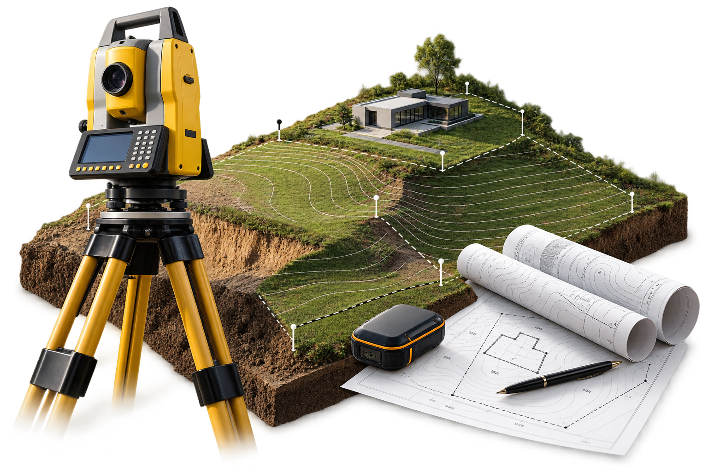
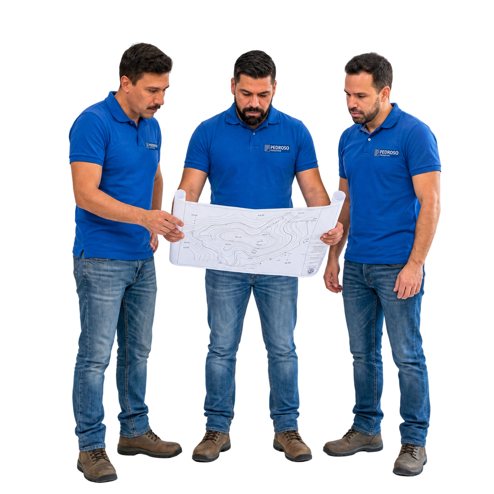

Topografia feita por quem conhece
Levantamentos, demarcações e informações técnicas para orientar projetos, regularizar imóveis e tomar decisões com segurança.

Precisão técnica começa com uma leitura correta do terreno
A Pedroso Topografia é uma empresa de Arujá especializada em transformar medições de campo em informações claras para proprietários, arquitetos, engenheiros e empresas. O trabalho começa no terreno, mas o resultado aparece na segurança de projetar, construir, dividir ou regularizar um imóvel com dados confiáveis.
A atuação reúne levantamentos planialtimétricos e cadastrais, identificação de limites, demarcação, georreferenciamento e apoio técnico para processos de regularização fundiária, incluindo usucapião. Cada serviço é dimensionado conforme a necessidade real do imóvel e da etapa do projeto.
Por que a Pedroso existe
Nossa missão: produzir informações topográficas precisas para que decisões sobre terrenos e obras sejam tomadas com mais clareza, segurança e previsibilidade.
O que orienta o nosso trabalho:
- Medição criteriosa e informação técnica confiável
- Escopo explicado com clareza antes do início
- Respeito aos limites do imóvel e às exigências de cada processo
- Atendimento próximo em Arujá e região
Do campo ao documento
O serviço não termina quando a medição acaba. Os dados coletados em campo são organizados para apoiar projetos de arquitetura e engenharia, levantamentos de limites e processos de regularização. Assim, cada cliente recebe uma base técnica coerente com o objetivo do trabalho — sem excesso de informação e sem etapas mal explicadas.
A empresa atua em serviços de cartografia, topografia e geodésia, conectando conhecimento de campo, leitura espacial e documentação técnica para atender propriedades urbanas, áreas rurais e obras em diferentes estágios.
